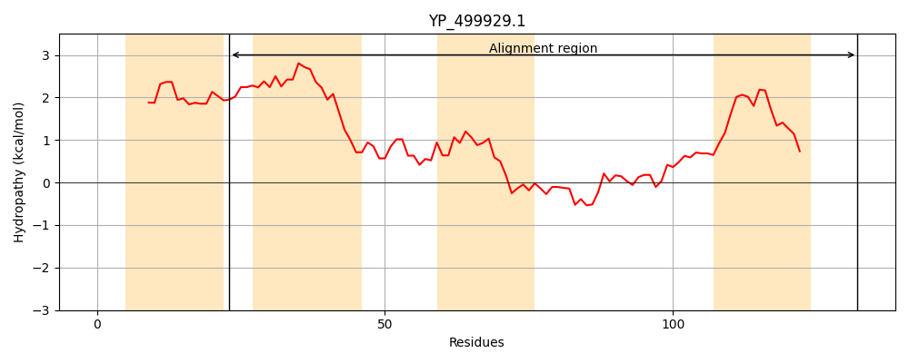
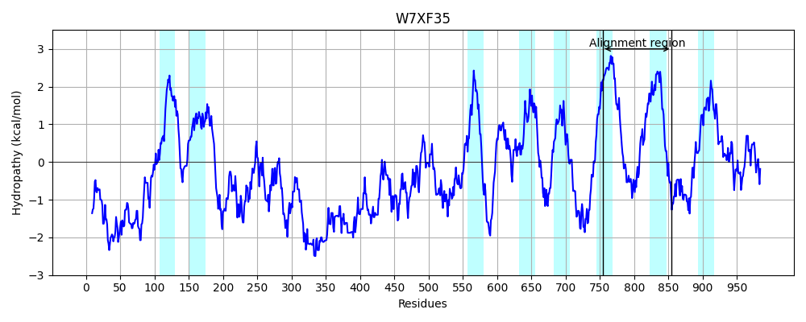
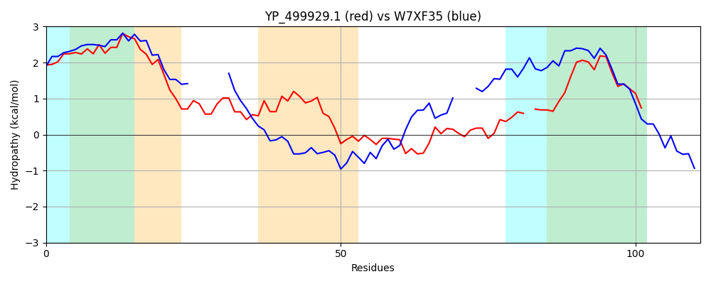

Hit Accession: W7XF35
Hit TCID: 1.A.17.3.12
Hit Description: gnl|BL_ORD_ID|20683 gnl|TC-DB|W7XF35|1.A.17.3.12 Transmembrane protein, putative OS=Tetrahymena thermophila (strain SB210) GN=TTHERM_000101449 PE=4 SV=1
Mach Len: 111
e:0.000092
Query TMS Count : 4
Hit TMS Count: 8
TMS-Overlap Score: 1.550000
Predicted Substrates:None
BLAST Alignment:
| Protein Hydropathy Plots: | |
|---|---|
|  |  |
Pairwise Alignment-Hydropathy Plot: | |
|  | |